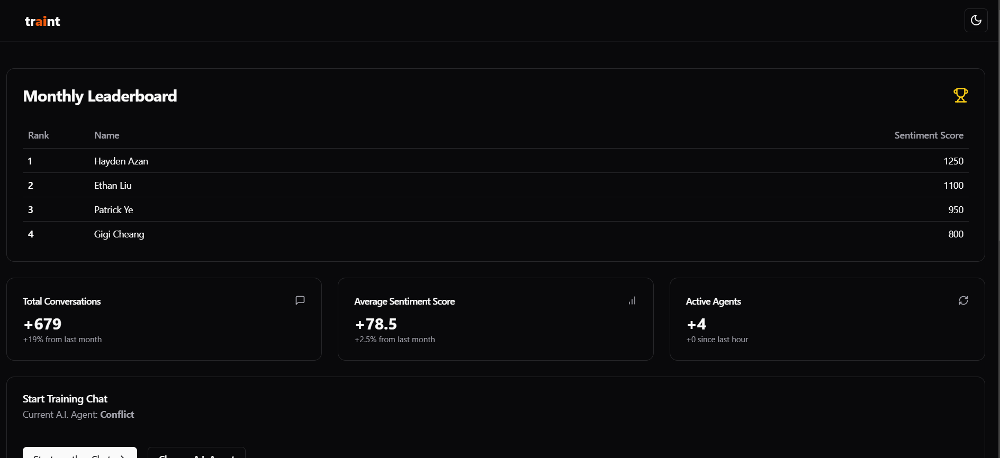
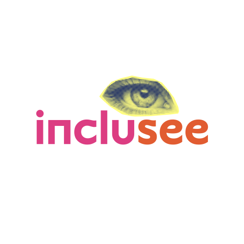

A selection of products, experiments, and team builds. Choose a file to inspect the project.
project_explorer
[ok] mounting /portfolio/projects
[ok] indexing project records
[ok] loading 5 objects
explorer ready
C:portfolioprojectsjam_website.web
AI CUSTOMER SIMULATION / LIVEtraint
CONFLICT_AGENT
SENTIMENT+78
COACHING READY
PRACTICE // ANALYZE // IMPROVE
Hackathon winner / AI
traint
2x winner
An AI-powered training platform for customer support and sales teams, built in 32 hours at Hack the North 2024.
01 / Problem
Human customer service agents need realistic practice across varied scenarios, but traditional training is limited. AI customer archetypes can accelerate that preparation.
02 / Build
Created adaptive customer personas, live sentiment scoring, transcript analysis, and next-step coaching using Genesys, Voiceflow, and Groq.
03 / Result
Won the Genesys challenge and the Voiceflow non-chatbot AI agent prize at Canada’s biggest hackathon.
media_archive / traintslot 01

Overview of agent rankings, sentiment scores, conversation volume, and active sessions.
An Adobe Creative Cloud accessibility add-on created at Hack the 6ix. After the hackathon, our team received a grant from the Adobe Fund for Design to continue developing the project.
01 / Problem
Designers needed a faster way to identify inaccessible colour combinations without interrupting their Creative Cloud workflow.
02 / Build
Created an add-on that calculates WCAG AA contrast ratios, explains failures, and generates accessible monochromatic alternatives.
03 / Result
Delivered in-editor recommendations and copyable colour values, then received an Adobe Fund for Design grant to continue development.
media_archive / incluseeslot 01

Inclusee’s project graphic from its original Hack the 6ix submission.